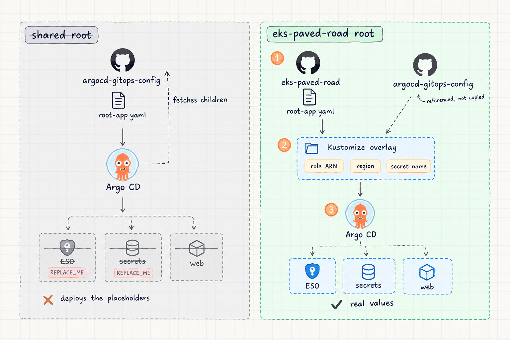

Most EKS demos stop once the cluster is up. This lab is about what comes after: a cluster an app team could be handed, where infrastructure and workloads change through Git, and the only thing that crosses between the two is a role ARN, a region and a secret name.
The situation
This is a personal lab, not client work. It has no users and no traffic, and nothing on this page is a production claim. I'm building it in public and writing it up as I go, so the table below is the real state of it today.
| Part | State |
|---|---|
| Terraform: VPC, EKS, IRSA, Secrets Manager secret | Written, passes fmt and validate |
| Bootstrap: Argo CD install and handover | Written |
GitOps overlay over argocd-gitops-config | Written |
| First apply on a real cluster | Not run |
| Observability, Karpenter, CI security gates | Not started |
| Failure drills and runbooks | Not run |
Why split it at all
The quick way to put an app on EKS is one Terraform root that builds the cluster and then uses the Helm and Kubernetes providers to install everything inside it. It works on day one. After that, every change to a Deployment goes through terraform apply, nothing notices when someone edits the cluster by hand, and the Kubernetes provider can't plan against a cluster that doesn't exist yet.
So the line is drawn at the cluster boundary. Terraform builds the VPC, the cluster, the IAM it needs, and stops. Argo CD owns everything inside the cluster and reverts drift on its own. The question this raises is how the cluster-side manifests learn things only Terraform knows, like the ARN of a role it just created, without copying manifests between repos or putting anything secret in Git.
What I built
Terraform stops at the cluster
The root module in terraform/envs/dev wires three thin modules around the official terraform-aws-modules VPC and EKS modules. The VPC spans two Availability Zones with public and private subnets and exactly one NAT gateway. EKS runs Kubernetes 1.35 with a single spot t3.small managed node group on Amazon Linux 2023 in the private subnets, and the OIDC provider turned on for IRSA.
Cluster access uses EKS access entries rather than the aws-auth ConfigMap, so Terraform never needs a Kubernetes provider. The whole apply talks only to AWS APIs, which means it can plan from an empty account and destroy cleanly at the end of a session. State sits in a versioned, encrypted S3 bucket with a DynamoDB lock table, the only thing left running between sessions.
Two repos, three values
The Argo CD Applications, the External Secrets wiring and the sample web app live in a separate repo, argocd-gitops-config, which I also use for a local kind lab. Its EKS manifests carry three placeholders: the ESO role ARN, the AWS region and the Secrets Manager secret name.
This repo doesn't copy those manifests. gitops/eks-dev is a Kustomize overlay that references them by URL and patches in the three values. Region and secret name are fixed, so they're committed. The role ARN only exists after terraform apply, so bootstrap/install.sh reads it from terraform output and writes it into the overlay, to be committed and pushed. An ARN identifies a role, it doesn't grant access to one, so it's safe in Git.
Reference the GitOps repo and patch three values in an overlay
Copying the manifests into this repo and editing them
Why: A copy drifts from the original the first time either side changes. A reference keeps one source of truth, and the overlay shows in a few lines exactly what is environment-specific. The cost is that a breaking change upstream reaches this environment on its next sync, because the references track main.
The app-of-apps that shipped its own placeholders
The GitOps repo already has an app-of-apps for EKS: a root Application that points at its own eks/apps directory and creates three child Applications from it. The obvious move is to apply that root and patch the children in the overlay.
It doesn't work. Kustomize can patch the root Application before it's applied, but Argo CD then fetches the children itself, straight from the GitOps repo, unpatched. The External Secrets Operator would install with REPLACE_ME_ESO_IRSA_ROLE_ARN as its role annotation, and the SecretStore would look for a region called REPLACE_ME_AWS_REGION. Everything syncs green, and nothing can read a secret.

So this repo has its own root, gitops/eks-dev/root-app.yaml. It points at the overlay's apps/ directory, which references the same three child Applications and patches them there. The one that needs the role ARN gets it as a Helm parameter. The one that deploys the SecretStore is repointed at this repo's secrets/ overlay, which patches region and secret name. Argo CD renders the overlay, so what it applies is already filled in.
# same three children, referenced, never copied resources: - https://raw.githubusercontent.com/.../eks/apps/external-secrets-operator.yaml - https://raw.githubusercontent.com/.../eks/apps/secrets.yaml - https://raw.githubusercontent.com/.../eks/apps/web.yaml patches: - target: { kind: Application, name: eks-external-secrets } patch: |- - op: replace path: /spec/source/helm/parameters/1/value value: REPLACE_ME_ESO_IRSA_ROLE_ARN # bootstrap writes the real ARN - target: { kind: Application, name: eks-secrets } patch: |- - op: replace path: /spec/source/path value: gitops/eks-dev/secrets
One Kustomize detail needed a fix. The github.com/org/repo//path?ref= form only works for a directory that has its own kustomization.yaml. eks/secrets has one, so it's referenced that way. The single Application files and the AppProject don't, so they're referenced by raw URL.
A root Application per environment, in the environment's repo
Applying the shared root from the GitOps repo and patching it
Why: A patch on a parent never reaches children that Argo CD fetches on its own. Owning the root means the environment decides what its children look like. The cost is one more Application manifest, and the upstream EKS root goes unused.
No AWS keys in the cluster
The web app needs database credentials. They live in AWS Secrets Manager and nowhere else. Terraform creates the secret as an empty container, with no aws_secretsmanager_secret_version, so the value never reaches Git or Terraform state. It's set once by hand with aws secretsmanager put-secret-value.
The External Secrets Operator reads it through IRSA. Its ServiceAccount is annotated with the role ARN, and the role's trust policy only accepts a token from that exact ServiceAccount, external-secrets:external-secrets, with the sts.amazonaws.com audience. The role can call GetSecretValue and DescribeSecret on one secret ARN and nothing else. The SecretStore uses auth: {}, so it picks up those short-lived credentials from the controller instead of a stored key.

Sync waves put it in order. Wave 1 installs ESO and its CRDs, wave 2 applies the SecretStore and ExternalSecret, and wave 3 deploys web, which loads the resulting Secret with envFrom. The ExternalSecret refreshes hourly, so a value rotated in Secrets Manager reaches the Kubernetes Secret without a commit. The pods only pick it up on restart, because envFrom is read when a container starts.
IRSA on ESO's ServiceAccount, scoped to one secret ARN
Secrets Manager access on the node IAM role
Why: Anything granted to the node role is available to every pod on the node. Binding it to one ServiceAccount means only the ESO controller can read the secret, and only that secret. The cost is a role per controller and an OIDC trust to keep correct, which Terraform owns.
One manual step, then Git
bootstrap/install.sh is the only thing run by hand after terraform apply. It writes the role ARN into the overlay, installs Argo CD from a pinned Helm chart (7.7.11, Argo CD 2.13) using the values file from the GitOps repo, then applies the AppProject and the root Application. After that, every Application syncs automatically with prune and self-heal on, so a hand edit in the cluster gets reverted to what's in Git.
There's no LoadBalancer anywhere. The Argo CD UI is reached with kubectl port-forward. A type: LoadBalancer Service creates an AWS load balancer that bills by the hour and isn't removed by terraform destroy, because Terraform never knew about it. Port-forward costs nothing and needs nothing public.
What it costs
The cluster is destroyed at the end of each session. Only the state bucket and lock table stay. An AWS Budget alert at $5 a month was in place before anything else.
| Resource | Approx. per hour |
|---|---|
| EKS control plane | ~$0.10 |
| NAT gateway (one) | ~$0.045 + data |
| 1 × t3.small spot node | ~$0.007 |
| Secrets Manager secret | ~$0.40 / month |
On-demand list prices in us-east-1 used for planning, not a bill. Spot prices vary. The control plane price holds only while the Kubernetes version is in standard support; after that EKS bills extended support at ~$0.60 an hour.
The control plane is the floor and can't be avoided, so the rest is about not adding to it: one NAT gateway instead of one per AZ, spot nodes, no managed database, and no load balancers.
What's left
- The first real apply. Everything above is written and validated offline. The next session brings the cluster up and checks that the secret actually lands in the pod.
- Observability and autoscaling. Prometheus, Grafana and Loki through Argo CD, and Karpenter in place of the fixed node group, with consolidation measured rather than assumed.
- CI gates. fmt, validate, tflint and trivy on Terraform, image scanning, and a manifest render check so a broken overlay fails a pull request instead of a sync.
- Failure drills. Delete a synced resource and time the self-heal, rotate the secret and watch it propagate, rebuild from zero. Results go in a runbook per drill, published as measured.
What production would add
This is a lab, and some gaps are on purpose to keep it cheap. Before real workloads I'd close them:
- Pinned GitOps references. The overlay tracks
mainof the GitOps repo. Production pins a tag or commit and promotes it. - A tighter AppProject.
eks-projectallows every resource kind. Production splits platform add-ons from workloads, each with its own allow-list. - A private API endpoint, or a public one limited to known CIDRs.
- Egress in every AZ. One NAT gateway is a single point of failure.
- Argo CD behind TLS and SSO instead of
server.insecureover port-forward. - On-demand capacity alongside spot, so a spot reclaim can't take out every node.